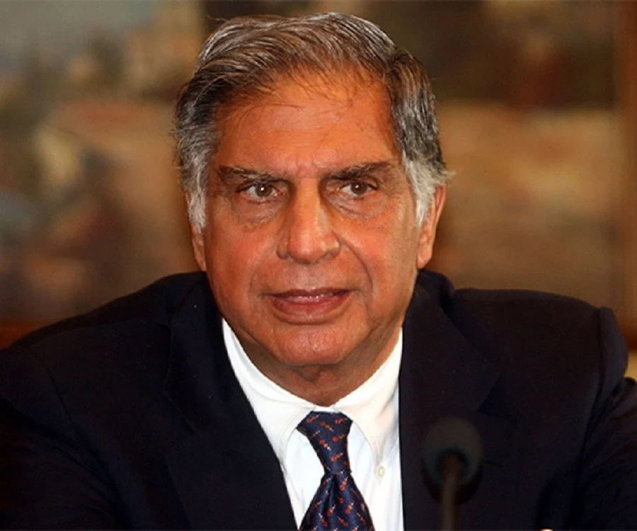

All of us do not have equal talents. Yet, all of us have an equal opportunity to develop out talents.
Biography
Ratan Tata, a visionary industrialist and philanthropist, is the epitome of Indian business leadership. Born in 1937, he took over the helm of the Tata Group in 1991, transforming it into a global conglomerate with diverse interests in industries ranging from steel and automobiles to software and tea. Under his astute guidance, Tata became a household name, synonymous with excellence, innovation, and social responsibility. His unwavering commitment to ethical business practices and his dedication to empowering communities earned him the respect and admiration of millions worldwide. Even in retirement, Tata continues to inspire and mentor aspiring entrepreneurs, leaving an indelible mark on the Indian business landscape.